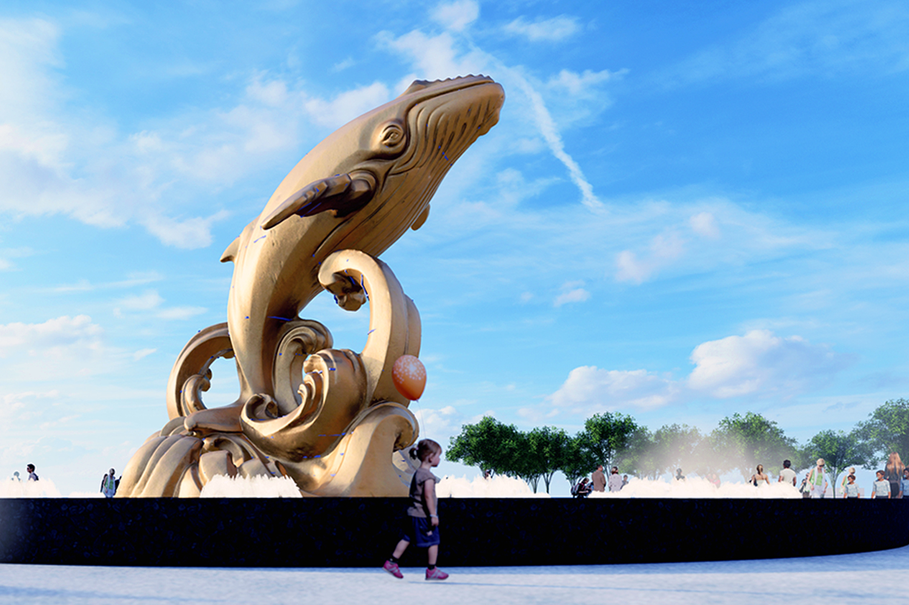
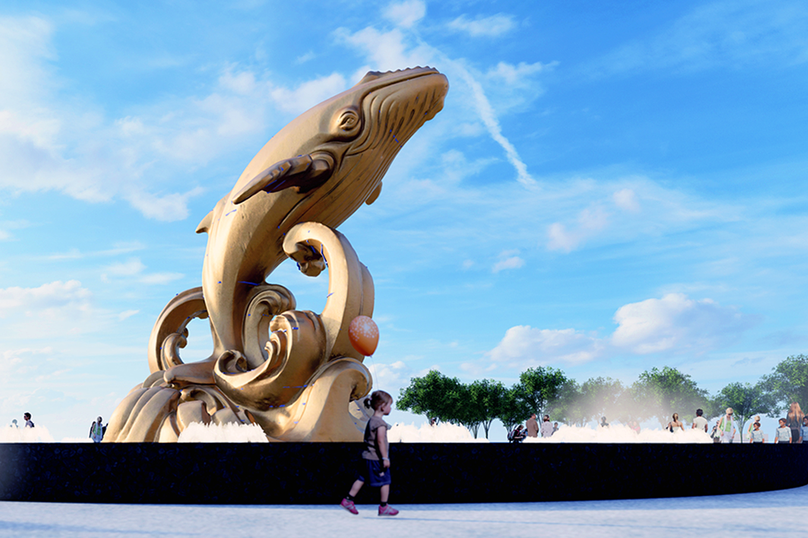

一夜干しイカ
ブンタウの海風と太陽で作られる一夜干しイカは、柔らかく香り高い逸品です。半日だけ干すことで、旨味が凝縮され、焼くと香ばしい香りが広がります。お酒のつまみとしても人気が高く、地元の人々はこれを「海の贈り物」と呼びます。お土産としても評判で、パッケージ入りのものは持ち帰りにも最適です。
ブンタウの海風と太陽で作られる一夜干しイカは、柔らかく香り高い逸品です。半日だけ干すことで、旨味が凝縮され、焼くと香ばしい香りが広がります。お酒のつまみとしても人気が高く、地元の人々はこれを「海の贈り物」と呼びます。お土産としても評判で、パッケージ入りのものは持ち帰りにも最適です。
伝統的な製法で作られる魚醤は、ブンタウ近郊の特産品です。天然の魚と塩だけを使い、1年以上熟成させて作られるため、深いコクと香りが特徴です。ベトナム料理に欠かせない調味料であり、家庭の味を支える存在。料理好きな人へのお土産にもぴったりです。
ブンタウの市場では、色とりどりの干し魚や塩漬け魚が並びます。太陽と潮風で乾かした魚は、保存が効くだけでなく、焼くと香ばしい香りが広がります。旅行者にとっては、ブンタウの海を思い出させる味。家庭でも簡単に調理できるため、人気のお土産となっています。

ふわふわのスポンジケーキに塩漬け卵黄をのせたブンタウ名物スイーツ。甘じょっぱいハーモニーがクセになる一品です。地元のベーカリーでは焼きたてが並び、おしゃれなパッケージ入りも多く、お土産に喜ばれます。ブンタウの優しい風味がぎゅっと詰まったケーキです。

ブンタウの浜辺で拾われた貝殻を使った手作りアクセサリーは、旅の思い出にぴったり。ペンダントやイヤリングなど、一つひとつ形や色が異なり、世界に一つだけの特別な品です。自然の美しさと職人の温かみが感じられる、心のこもったお土産です。
 
